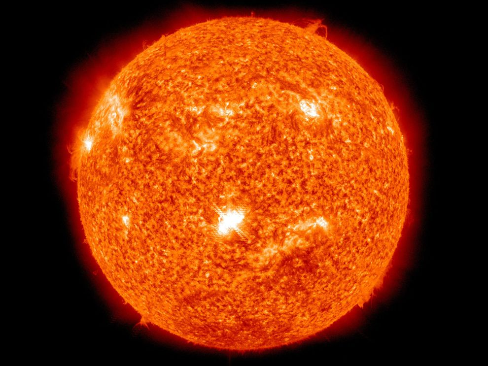
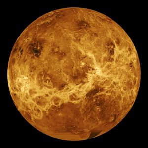

Our solar system consists of eight planets which all orbit around our home star, the Sun.
Our planetary system was formed 4.6 billion years ago! For most of history it was thought that everything in space moved around the Sun, however around the 17th century the idea, that the earth is just one of the planets in the system, started gaining popularity.In fact, the Sun is only one of more than 200 billion stars moving about in the Milky Way!The other objects are pulled into orbit around the Sun. The Sun is mostly made out of hydrogen, and some helium.
There are eight planets in the solar system.They are mostly made of rock and metal, and they are mostly solid. The last four planets are called gas giants. This is because they are much larger than other planets and are mostly made of gas. The Solar System also contains other things. They are:
Mercury
Venus
Earth
Mars
Jupiter
Saturn
Uranus
Neptune
The solar system also contains:
There are asteroid belts, mostly between Mars and Jupiter.
Further out than Neptune, there is the Kuiper belt and the scattered disc.
These areas have dwarf planets, including Pluto, MakeMake,Haumea,Ceres and Eris.
There are thousands of very small objects in these areas.
There are also comets, centaurs, and there is interplanetary dust.
Six of the planets and three of the dwarf planets are orbited by moons. Furthermore, planetary dust orbits the gas giants. Many other systems like the Solar System have been found. Each of the billions of stars in the Milky Way galaxy might have a planetary system.
SOLAR SYSTEM 101
EVOLUTION OF THE SOLAR SYSTEM
The formation and evolution of the Solar System began 4.6 billion years ago with the gravitational collapse of a small part of a giant molecular cloud. Most of the collapsing mass collected in the centre, forming the Sun, while the rest flattened into a protoplanetary disk of loose dust, out of which the planets, moons, asteroids, and other Solar System bodies formed.
This model, known as the nebular hypothesis, was developed in the 18th (1700s) century by Emanuel Swedenborg, Immanuel Kant, and Pierre-Simon Laplace. It has been adjusted by scientific disciplines such as astronomy, physics, geology, and planetary science. As our knowledge of space has grown, the models have been changed to account for the new observations.
The Solar System has evolved considerably since its initial formation. Many moons have formed from circling discs of gas and dust around their parent planets, while other moons are believed to have formed and were later captured by their planets. Still others, as the Earth's Moon, may be the result of giant collisions.
Many collisions between bodies have occurred, and have been important to the evolution of the Solar System. In the early stages, the positions of the planets sometimes shifted, and planets have switched places. This planetary migration is thought to have been responsible for much of the Solar System's early evolution.
EARTHS'S ORBIT
The Earth's orbit around the Sun is nearly a perfect circle, but when mapped it is found that the Earth moves around the Sun in a very slightly oval shaped orbit, called an elliptical orbit. The other planets in the Solar System also orbits the Sun in slightly elliptical orbits. Mercury has a more elliptical orbit than the others, and some of the smaller objects orbit the Sun in very eccentric orbits.
DISCOVERY AND EXPLORATION
For thousands of years, people had no need for a name for the "Solar System". They thought the Earth stayed still at the center of everything (geocentrism). Although the Greek philosopher Aristarchus of Samos suggested that there was a special order in the sky, Nicolaus Copernicus was the first to develop a mathematical system that described what we now call the "solar system". This was called a new "system of the world".
In the 17th century, Galileo Galilei, Johannes Kepler and Isaac Newton began helping people understand physics more clearly. People began to accept the idea that the Earth is a planet and moves around the Sun, and that the planets are worlds with the same physical laws that control Earth. More recently, telescopes and space probes have led to discoveries of mountains and craters, and seasonal meteorological phenomena such as clouds, dust storms and ice caps on the other planets.
STRUCTURE AND COMPOSITION
The principal component of the Solar System is the Sun, a star that contains 99.86% of the system's known mass and dominates it gravitation. The Sun's four largest orbiting bodies, the giant planets, account for 99% of the remaining mass, with Jupiter and Saturn together comprising more than 90%. The remaining objects of the Solar System including the four terrestrial planets, the dwarf planets, moons, asteroids, and comets) together comprise less than 0.002% of the Solar System's total mass.
All the planets, and most other objects, orbit the Sun in the same direction that the Sun is rotating (counter-clockwise, as viewed from above Earth's north pole). There are exceptions, such as Halley's Comet.Most of the planets in the Solar System have secondary systems of their own, being orbited by planetary objects called natural satellites, or moons, two of which, Titan and Ganymede, are larger than the planet Mercury and, in the case of the four giant planets, by planetary rings, thin bands of tiny particles that orbit them in unison.
THE SUN
At the center of the Solar System is the Sun. It is a star, like the billions of other stars in the sky.The Sun is important to us because it gives us heat and energy that allows life. None of the life on Earth could exist without the Sun.
The rest of the objects in the Solar System orbit (travel around) the Sun. The planets are the largest of these. The planets closest to the Sun are called the inner planets. These are Mercury, Venus, Earth, and Mars. Then comes a big ring of asteroids, chunks of rock much smaller than planets. This ring is called the asteroid belt. Within the asteroid belt, there is a dwarf planet (smaller than a normal planet) named Ceres. Then come the outer planets: Jupiter, Saturn, Uranus, and Neptune. Farther out there are two dwarf planets, Pluto and Eris

Activity on the Sun's surface, such as solar flares and coronal mass ejections, disturbs the heliosphere, creating space weather and causing geomagnetic storms.
INNER PLANETS
The first four planets closest to the Sun are called the inner planets. They are small and dense terrestrial planets, with solid surfaces.
MERCURY
Mercury (0.4 AU from the Sun) is the closest planet to the Sun and the smallest planet in the Solar System (0.055 M⊕). (An Astronomical unit (AU) is a unit of length derived from the Earth's orbit. It is the average distance the Earth gets from the Sun on the long axis of the ellipse.)
Mercury has no natural satellites; besides impact craters, its only known geological features are lobed ridges or rupes that were probably produced by a period of contraction early in its history.
VENUS
Venus (0.7 AU from the Sun) is close in size to Earth (0.815 M⊕) and, like Earth, has a thick silicate mantle around an iron core, a substantial atmosphere, and evidence of internal geological activity. It is much drier than Earth, and its atmosphere is ninety times as dense. Venus has no natural satellites.

It is the hottest planet, with surface temperatures over 400 °C (752 °F), most likely due to the amount of greenhouse gases in the atmosphere.
EARTH
Earth (1 AU from the Sun) is the largest and densest of the inner planets, the only one known to have current geological activity, and the only place where life is known to exist. Its liquid hydrosphere is unique among the terrestrial planets, and it is the only planet where plate tectonics has been observed.
Earth's atmosphere is radically different from those of the other planets, having been altered by the presence of life to contain 21% free oxygen. It has one natural satellite, the Moon, the only large satellite of a terrestrial planet in the Solar System.
MARS
Mars (1.5 AU from the Sun) is smaller than Earth and Venus (0.107 M⊕). It has an atmosphere of mostly carbon dioxide with a surface pressure of 6.1 millibars (roughly 0.6% of that of Earth). Its surface, peppered with vast volcanoes, such as Olympus Mons, and rift valleys, such as Valles Marineris, shows geological activity that may have persisted until as recently as 2 million years ago.
Its red colour comes from iron oxide (rust) in its soil.Mars has two tiny natural satellites (Deimos and Phobos) thought to be either captured asteroids, or ejected debris from a massive impact early in Mars's history.
ASTEROID BELT
Asteroids except for the largest, Ceres, are classified as small Solar System bodies and are composed mainly of rocky and metallic minerals, with some ice. They range from a few metres to hundreds of kilometres in size. Asteroids smaller than one meter are usually called meteoroids and micrometeoroids (grain-sized).
The asteroid belt occupies the orbit between Mars and Jupiter. It is thought to be remnants from the Solar System's formation that failed to form because of the gravitational interference of Jupiter. The asteroid belt is very sparsely populated; spacecraft routinely pass through without incident.
CERES
Ceres (2.77 AU) is the largest asteroid, a protoplanet, and a dwarf planet. Its mass is large enough for its own gravity to pull it into a spherical shape.
Ceres was considered a planet when it was discovered in 1801, and was reclassified to asteroid in the 1850s as further observations revealed additional asteroids. It was classified as a dwarf planet in 2006 when the definition of a planet was created.
OUTER PLANETS
JUPITER
Jupiter (5.2 AU), at 318 M⊕, is 2.5 times the mass of all the other planets put together. It is composed largely of hydrogen and helium. Jupiter's strong internal heat creates semi-permanent features in its atmosphere, such as cloud bands and the Great Red Spot.
Jupiter has 79 known satellites. The four largest, Ganymede, Callisto, Io, and Europa, show similarities to the terrestrial planets, such as volcanic activity and internal heating. Ganymede, the largest satellite in the Solar System, is larger than Mercury.
SATURN
Saturn (9.5 AU), with its extensive ring system, has several similarities to Jupiter. Although Saturn has 60% of Jupiter's volume, it is less than a third as massive, at 95 M⊕.Saturn is the only planet of the Solar System that is less dense than water. The rings of Saturn are made up of small ice and rock particles.
Saturn has 62 confirmed satellites composed largely of ice. Two of these, Titan and Enceladus, show signs of geological activity. Titan, the second-largest moon in the Solar System, is larger than Mercury and the only satellite in the Solar System with a substantial atmosphere.
URANUS
Uranus (19.2 AU), at 14 M⊕, is the lightest of the outer planets. Unlike the planets, it orbits the Sun on its side. It has a much colder core than the other giant planets and radiates very little heat into space. Uranus has 27 known satellites, the largest ones being Titania, Oberon, Umbriel, Ariel, and Miranda.
NEPTUNE
Neptune has 14 known satellites. The largest, Triton, is geologically active, with geysers of liquid nitrogen. Triton is the only large satellite with a retrograde orbit. Neptune is accompanied in its orbit by several minor planets, termed Neptune trojans, that are in 1:1 resonance with it.
DWARF PLANETS
Pluto had been called a planet since it was discovered in 1930, but in 2006 astronomers meeting at the International Astronomical Union decided Pluto did not fit into the definition of a planet. Instead they called it a dwarf planet along with some others. These small planets are sometimes called plutinos.
Pluto
Ceres
Haumea
Eris
MakeMake
WHY IS IT CALLED SOLAR SYSTEM?
There are many planetary systems like ours in the universe, with planets orbiting a host star. Our planetary system is named the "solar system" because our Sun is named Sol, after the Latin word for Sun, "solis," and anything related to the Sun we call "solar."